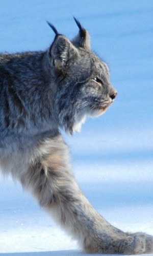
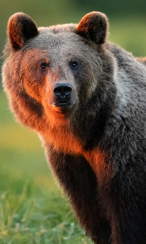
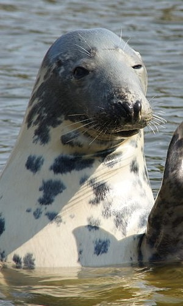
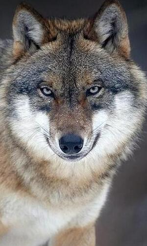

Zwierzęta na wyginięciu

Ryś
(lynx lynx)
Ryś
(lynx lynx)
W Polsce na wolności ok. 200
Zagrożenia:
kłusownictwo
penetracja lasów przez ludzi
zakłócanie spokoju
wypadki na drogach

Niedźwiedź
(ursus arctos)
Niedźwiedź
(ursus arctos)
W Polsce na wolności ok. 100
Zagrożenia:
konflikty niedźwiedź – człowiek
penetracja lasów przez ludzi
zakłócanie spokoju
utrata siedlisk poprzez budowę dróg

Foka szara
(halichoerus grypus)
Foka szara
(halichoerus grypus)
W Bałtyku ok. 40000
Zagrożenia:
przyłów
turystyka
działalnośc człowieka

Wilk szary
(canis lupus)
Wilk szary
(canis lupus)
W Polsce na wolności ok. 2000
Zagrożenia:
kłusownictwo
kolizje z pojazdami
konflikty z hodowcami zwierząt gospodarskich /li>
Zespół Szkół Politechnicznych w Głogowie
Grzegorz Bober